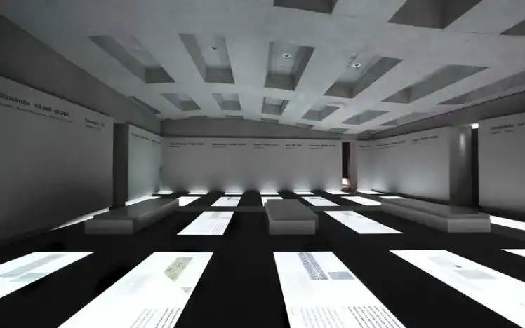
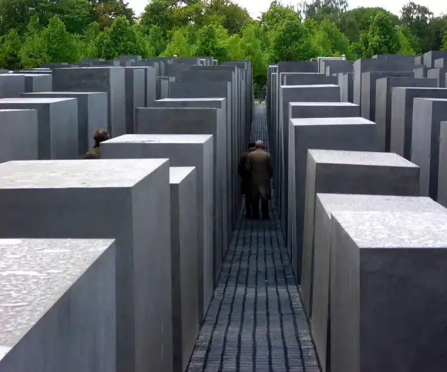

Mémorial de Berlin
Le Mémorial de l'Holocauste, conçu par l'architecte Peter Eisenman, est un lieu émouvant situé au cœur de Berlin, en Allemagne, dédié à la mémoire des six millions de Juifs assassinés pendant la Shoah. Inauguré en 2005, le mémorial offre une expérience unique et introspective. Conception Architecturale : L'aspect le plus frappant du mémorial est son champ de stèles, également appelé le "Champ de stèles de l'Holocauste". Il se compose de 2 711 blocs de béton de différentes hauteurs et dimensions, créant un labyrinthe ondulé. Cette conception symbolise le chaos, la perte et l'incertitude associés à l'Holocauste. Expérience du Visiteur : En parcourant le champ, les visiteurs sont invités à réfléchir et à se perdre dans les allées étroites. L'architecture délibérément désorientante vise à susciter une gamme d'émotions, de la confusion à la solitude, reflétant les expériences des victimes de l'Holocauste.
Le Mémorial de l'Holocauste, conçu par l'architecte Peter Eisenman, est un lieu émouvant situé au cœur de Berlin, en Allemagne, dédié à la mémoire des six millions de Juifs assassinés pendant la Shoah. Inauguré en 2005, le mémorial offre une expérience unique et introspective. Conception Architecturale : L'aspect le plus frappant du mémorial est son champ de stèles, également appelé le "Champ de stèles de l'Holocauste". Il se compose de 2 711 blocs de béton de différentes hauteurs et dimensions, créant un labyrinthe ondulé. Cette conception symbolise le chaos, la perte et l'incertitude associés à l'Holocauste. Expérience du Visiteur : En parcourant le champ, les visiteurs sont invités à réfléchir et à se perdre dans les allées étroites. L'architecture délibérément désorientante vise à susciter une gamme d'émotions, de la confusion à la solitude, reflétant les expériences des victimes de l'Holocauste. .
Centre d'Information : Sous le champ de stèles se trouve le Centre d'Information, un lieu d'exposition qui complète l'expérience mémorielle. Il présente des expositions détaillées sur l'Holocauste, mettant en lumière les histoires individuelles des victimes et les horreurs de cette période sombre de l'histoire. Signification Symbolique : Le Mémorial de l'Holocauste à Berlin est un hommage poignant aux victimes de l'Holocauste et un rappel solennel des conséquences tragiques de la discrimination et de l'intolérance. Il sert de lieu de mémoire collective et encourage la réflexion profonde sur les valeurs fondamentales de l'humanité. En somme, le Mémorial de l'Holocauste de Berlin, par la vision créative de Peter Eisenman, offre aux visiteurs une expérience émotionnelle et intellectuelle inoubliable, honorant la mémoire des victimes tout en soulignant l'importance de la tolérance et de la préservation de l'histoire.